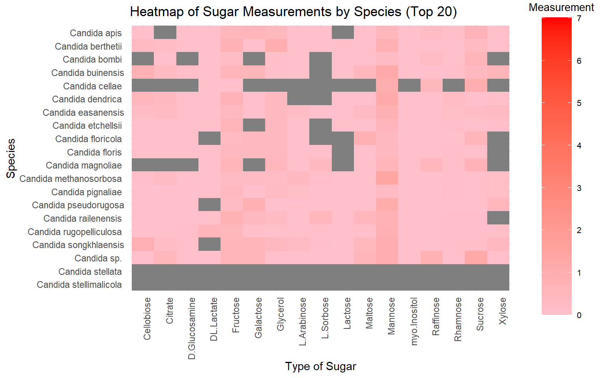
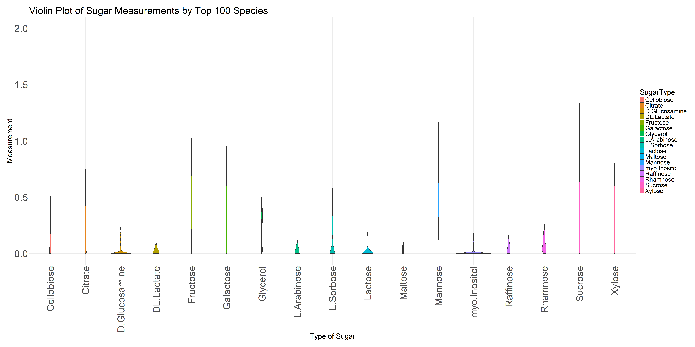
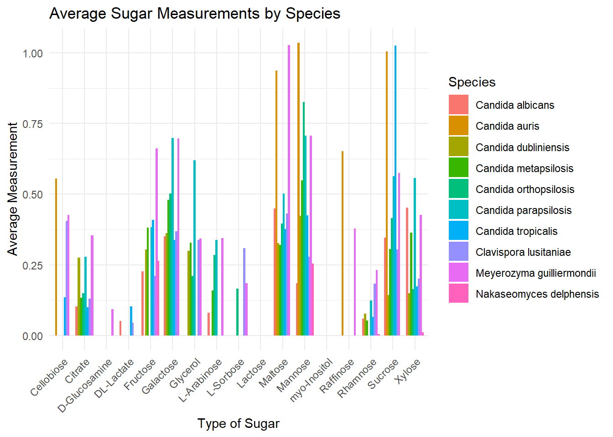
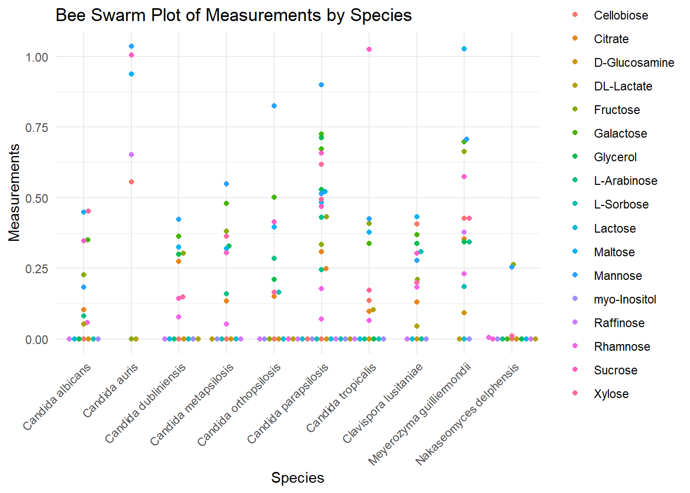

first-analysis
2024-02-22
Last updated: 2024-05-07
Checks: 5 2
Knit directory: MyCharts/
This reproducible R Markdown analysis was created with workflowr (version 1.7.1). The Checks tab describes the reproducibility checks that were applied when the results were created. The Past versions tab lists the development history.
The R Markdown file has unstaged changes. To know which version of
the R Markdown file created these results, you’ll want to first commit
it to the Git repo. If you’re still working on the analysis, you can
ignore this warning. When you’re finished, you can run
wflow_publish to commit the R Markdown file and build the
HTML.
Great job! The global environment was empty. Objects defined in the global environment can affect the analysis in your R Markdown file in unknown ways. For reproduciblity it’s best to always run the code in an empty environment.
The command set.seed(20240222) was run prior to running
the code in the R Markdown file. Setting a seed ensures that any results
that rely on randomness, e.g. subsampling or permutations, are
reproducible.
Great job! Recording the operating system, R version, and package versions is critical for reproducibility.
Nice! There were no cached chunks for this analysis, so you can be confident that you successfully produced the results during this run.
Using absolute paths to the files within your workflowr project makes it difficult for you and others to run your code on a different machine. Change the absolute path(s) below to the suggested relative path(s) to make your code more reproducible.
| absolute | relative |
|---|---|
| C:/Users/Jmons/OneDrive/Documents/R-Class work/MyCharts | . |
| C:/Users/Jmons/OneDrive/Documents/R-Class work/MyCharts/data/Shorted_C_NormGR_OnlySugars.csv | data/Shorted_C_NormGR_OnlySugars.csv |
| C:/Users/Jmons/OneDrive/Documents/R-Class work/MyCharts/data/NormGR_OnlySugars.csv | data/NormGR_OnlySugars.csv |
Great! You are using Git for version control. Tracking code development and connecting the code version to the results is critical for reproducibility.
The results in this page were generated with repository version b9ea0e3. See the Past versions tab to see a history of the changes made to the R Markdown and HTML files.
Note that you need to be careful to ensure that all relevant files for
the analysis have been committed to Git prior to generating the results
(you can use wflow_publish or
wflow_git_commit). workflowr only checks the R Markdown
file, but you know if there are other scripts or data files that it
depends on. Below is the status of the Git repository when the results
were generated:
Ignored files:
Ignored: .RData
Ignored: .Rhistory
Ignored: .Rproj.user/
Untracked files:
Untracked: analysis/all_species_violin_plot.png
Untracked: analysis/heatmap.png
Untracked: analysis/heatmap_large.png
Untracked: analysis/heatmap_tall.png
Untracked: analysis/sugar_measurements_plot.png
Untracked: analysis/tall_heatmap.png
Untracked: analysis/violin_plot.png
Untracked: analysis/violin_plot_adjusted.png
Untracked: analysis/violin_plot_adjusted_wide.png
Untracked: data/NormGR_OnlySugars.csv
Untracked: data/Shorted_C_NormGR_OnlySugars.csv
Untracked: heatmap.png
Untracked: heatmap_large.png
Untracked: heatmap_tall.png
Untracked: sugar_measurements_plot.png
Untracked: tall_heatmap.png
Untracked: violin_plot_adjusted_wide.png
Unstaged changes:
Modified: analysis/_site.yml
Modified: analysis/about.Rmd
Modified: analysis/first_analysis_trial.Rmd
Modified: analysis/index.Rmd
Modified: analysis/license.Rmd
Note that any generated files, e.g. HTML, png, CSS, etc., are not included in this status report because it is ok for generated content to have uncommitted changes.
These are the previous versions of the repository in which changes were
made to the R Markdown (analysis/first_analysis_trial.Rmd)
and HTML (docs/first_analysis_trial.html) files. If you’ve
configured a remote Git repository (see ?wflow_git_remote),
click on the hyperlinks in the table below to view the files as they
were in that past version.
| File | Version | Author | Date | Message |
|---|---|---|---|---|
| Rmd | 3c8c9d4 | JDardignac | 2024-03-14 | update to website |
| html | 3c8c9d4 | JDardignac | 2024-03-14 | update to website |
| html | 96fc87a | JDardignac | 2024-02-27 | Build site. |
| Rmd | e9f5597 | JDardignac | 2024-02-27 | Add my first analysis |
This is how I felt completing this website! Anyways lets get into the results shall we
| Version | Author | Date |
|---|---|---|
| 3c8c9d4 | JDardignac | 2024-03-14 |
The Top 20
There are so many Species of the genus Candida so just for fun, before we look at the truly pathogenic ones lets see how about 20 of them reacted in growing in different sugars
Here is a heat map looking at how much of the sugars were used based on each species
Attaching package: 'dplyr'The following objects are masked from 'package:stats':
filter, lagThe following objects are masked from 'package:base':
intersect, setdiff, setequal, union
Pretty cool right? Based on these results we see that relatively the same amount of sugar is taken up by each species but it appears that Mannose and Fluctose tend to be the favorite if they got to choose
Top 100 Analysis
Now lets expand this a bit and look at 100 different species on a heatmap. We still see this commonality of the yeast liking Fructose and Mannose the most

Another way to look at this analysis is through the use of a violin plot, showing how much is being taken up by the yeast based on the sugar type

The Most Pathogenic Yeast
Now lets look at the top dogs, that have been known for being the most pathogenic yeast in the worlds, those these isn’t a lot, this many is still concerting.
Rows: 1124 Columns: 24
── Column specification ────────────────────────────────────────────────────────
Delimiter: ","
chr (6): Species, Genus, NRRL, CBS, Other, Hittinger
dbl (18): PU, Cellobiose, Citrate, D-Glucosamine, Fructose, Galactose, Glyce...
ℹ Use `spec()` to retrieve the full column specification for this data.
ℹ Specify the column types or set `show_col_types = FALSE` to quiet this message. This is just one way of looking at how these yeast enjoy certain sugars over the other
Another way to look at this is through the use of a bee swarm map, giving a better visual of each value.

sessionInfo()R version 4.3.2 (2023-10-31 ucrt)
Platform: x86_64-w64-mingw32/x64 (64-bit)
Running under: Windows 11 x64 (build 22631)
Matrix products: default
locale:
[1] LC_COLLATE=English_United States.utf8
[2] LC_CTYPE=English_United States.utf8
[3] LC_MONETARY=English_United States.utf8
[4] LC_NUMERIC=C
[5] LC_TIME=English_United States.utf8
time zone: America/New_York
tzcode source: internal
attached base packages:
[1] grid stats graphics grDevices utils datasets methods
[8] base
other attached packages:
[1] ggbeeswarm_0.7.2 ggplot2_3.5.0 tidyr_1.3.1 dplyr_1.1.4
[5] readr_2.1.5 jpeg_0.1-10
loaded via a namespace (and not attached):
[1] sass_0.4.8 utf8_1.2.4 generics_0.1.3 stringi_1.8.3
[5] hms_1.1.3 digest_0.6.34 magrittr_2.0.3 evaluate_0.23
[9] fastmap_1.1.1 rprojroot_2.0.4 workflowr_1.7.1 jsonlite_1.8.8
[13] tidyverse_2.0.0 whisker_0.4.1 promises_1.2.1 purrr_1.0.2
[17] fansi_1.0.6 scales_1.3.0 textshaping_0.3.7 jquerylib_0.1.4
[21] cli_3.6.2 crayon_1.5.2 rlang_1.1.3 bit64_4.0.5
[25] munsell_0.5.0 withr_3.0.0 cachem_1.0.8 yaml_2.3.8
[29] parallel_4.3.2 tools_4.3.2 tzdb_0.4.0 colorspace_2.1-0
[33] httpuv_1.6.14 vctrs_0.6.5 R6_2.5.1 lifecycle_1.0.4
[37] git2r_0.33.0 stringr_1.5.1 bit_4.0.5 fs_1.6.3
[41] vipor_0.4.7 vroom_1.6.5 ragg_1.2.7 beeswarm_0.4.0
[45] pkgconfig_2.0.3 pillar_1.9.0 bslib_0.6.1 later_1.3.2
[49] gtable_0.3.4 glue_1.7.0 Rcpp_1.0.12 systemfonts_1.0.5
[53] xfun_0.41 tibble_3.2.1 tidyselect_1.2.0 highr_0.10
[57] rstudioapi_0.15.0 knitr_1.45 farver_2.1.1 htmltools_0.5.7
[61] labeling_0.4.3 rmarkdown_2.25 compiler_4.3.2